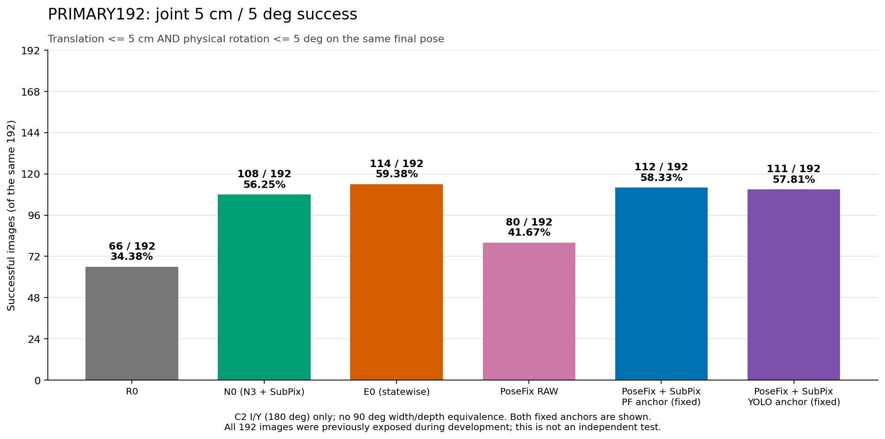
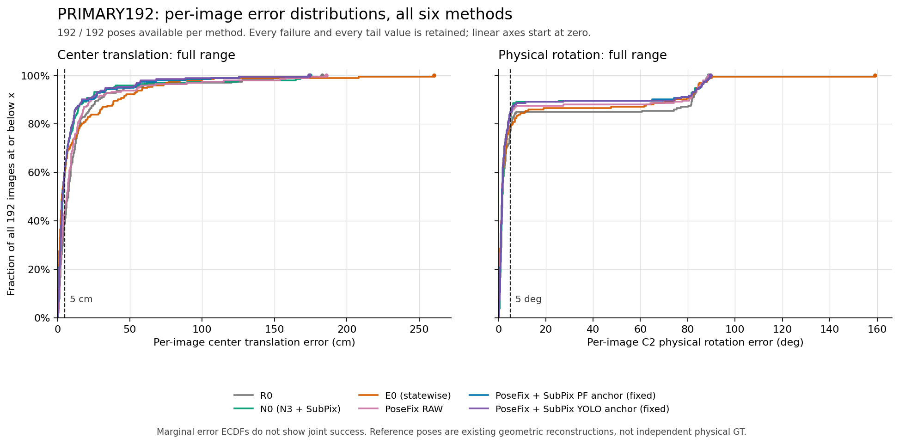

PRIMARY192: frozen six-method comparison
Exploratory comparison on the same 192 images. All images were previously exposed during development. This is not an independent test; existing geometric reconstruction poses are the reference, not independent physical ground truth.
E0 has 114 successes; the two predeclared fixed PoseFix + SubPix anchors have 112 and 111. E0 has higher translation/rotation means than both anchors. The report's paired cluster intervals include zero. These descriptive results establish neither statistical superiority nor equivalence, and no single anchor was selected as a representative winner.
Success: center translation ≤5 cm and physical rotation ≤5° on one final pose. Rotation allows only C2 I/Y (180°); a 90° width/depth swap is not equivalent. PRIMARY192 = TEST49 + REMAINDER143; CAL46 is excluded. All six methods have 192/192 available poses and zero missing poses.

All-image success count. Both predeclared anchor settings are shown. N0 is N3 + SubPix; E0 is the existing statewise method. Click for the standalone PNG.

Each ECDF includes all 192 existing per-image errors per method, including all failures. Full-range linear axes preserve maximum errors. The marginal curves do not encode joint success. Click for the standalone PNG.
Count and error tradeoffs on the identical 192 images
| Method | Success | T mean ± sample SD (cm) | T P95 / max (cm) | R mean ± sample SD (°) | R P95 / max (°) | T>50 / T>100 / R>45 counts |
|---|
| R0 | 66/192 | 14.54 ± 26.44 | 47.89 / 183.08 | 14.28 ± 28.96 | 84.48 / 88.80 | 10 / 6 / 29 |
|---|
| N0 (N3 + SubPix) | 108/192 | 11.31 ± 26.88 | 37.20 / 174.76 | 10.63 ± 25.13 | 84.23 / 88.90 | 8 / 5 / 20 |
|---|
| E0 (statewise) | 114/192 | 14.11 ± 30.08 | 60.28 / 260.41 | 13.00 ± 28.39 | 84.16 / 159.14 | 15 / 3 / 26 |
|---|
| PoseFix RAW | 80/192 | 13.84 ± 27.58 | 55.65 / 185.78 | 11.64 ± 26.52 | 84.24 / 88.94 | 12 / 5 / 23 |
|---|
PoseFix + SubPix
PF anchor (fixed) | 112/192 | 9.85 ± 20.59 | 46.42 / 174.00 | 10.54 ± 25.13 | 84.98 / 89.65 | 10 / 3 / 20 |
|---|
PoseFix + SubPix
YOLO anchor (fixed) | 111/192 | 9.38 ± 19.38 | 36.82 / 174.00 | 10.59 ± 25.25 | 84.93 / 89.65 | 9 / 2 / 20 |
|---|
Numbers are copied from the supplied PRIMARY192 summary CSV; SD uses ddof=1. No outlier filtering, method selection, new scoring, or inference is performed by the renderer. PF anchor limits SubPix motion relative to the PF output; YOLO anchor limits total PF + SubPix motion relative to original YOLO. Both use the predeclared 1% diagonal cap.
Comparison report (Korean) · Summary CSV · All row metrics CSV · Renderer provenance and resource receipt · Artifact SHA-256
Static local research artifact. Source: scripts/research/pallet_accuracy_closeout_20261017_v1/visualize.py. CSV-only presentation: new neural network forwards, F/PnP calls, training calls and operational changes are all zero.